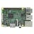
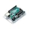

Things used in this project
Hardware components |
|
|  | Raspberry Pi 3 Model B |
|  | Arduino UNO |
Software apps and online services |
|
| Home Assistant | |

|
Arduino IDE |
Story
Overview
This project is my entry to the Build2gether 2.0 challenge. My initial ideas to Track 1 and Track 2 are shown below. But my solution to both the tracks is very similar and I combined the solutions into one single project.
“Track 2: Adaptation for INDOOR Activities”
PROBLEM : People with visual impairments may have difficulties in using the traditional visual interfaces to an IoT-based home automation system.
SOLUTION : I will create an IoT-based home automation system tailored for people with visual impairments. This system could enable voice-controlled operation of various household devices such as lights, thermostats, and appliances, allowing users to manage their environment more easily without relying on traditional visual interfaces.
“Track 1: Accessible HOME & TOOLS”
PROBLEM : It is not a easy task for people with mobility impairments to move around even indoor. They may have problem navigate to access home appliances such as lighting and temperature controller.
SOLUTION : I will develop a centralized IoT hub that integrates with various accessible home devices and tools, allowing users to control and monitor their environment through voice commands, gestures, or a smartphone app. This hub could manage tasks such as adjusting smart lighting, controlling motorized curtains/blinds, operating door locks, and managing temperature and humidity levels to enhance comfort and accessibility throughout the home.
Here are the feedbacks from contest masters:
“Track 2: Adaptation for INDOOR Activities”
FEEDBACK FROM CONTEST MASTERS:
This solution is already offered by Apple using their home networking tools. However, a specific set of interconnected devices could prove a more cost-effective solution. Some things to consider:
1. Interconnection between the devices and the control box should be wireless, e.g. via home WiFi or Bluetooth, to prevent the need for any internal wiring/decoration in the home.
2. Control could be remote, e.g. an app on a mobile device. This would allow users to turn appliances, lights, or heating/AC on/off whilst away from the home.
3. The connected home appliances, etc should be able to be operated without the control system to allow for operation by other users.
4. The control could be password/PIN protected.
“Track 1: Accessible HOME & TOOLS”
FEEDBACK FROM CONTEST MASTERS:
Your problem statement describes a real challenge for many people, myself included. Be sure to consider how these people currently get around, either in a wheelchair or other mobility device, or they may be bedbound(meaning they are unable to get out of bed). If their mobility is this severely impaired, it is unlikely they can use their hands or fingers to push buttons. Therefore, you must come up with an easy-to-use solution for this population without requiring significant hand or finger function. A good way to test your solution is to tape your hands in a fist and then make sure you can use all of the functions of your project solution. Also, who is going to install this solution if installation is necessary? Most likely this would be a family member or caregiver. Given that they are likely already overwhelmed with the responsibilities of helping take care of this individual, your solution must be very easy to use, install, and set up. Otherwise, it is unlikely to be used."
After integrating those feedbacks from contest master, the following is the revised combined solution.
REVISED COMBINED SOLUTION:
After considering those feedbacks above, I combined my solution to cater for the two tracks (visual and mobility impairment) track as described above.
I decided to use Home Assistant as a hub as it is easy to install on a Raspberry Pi device and there are lots of devices already integrated to the system via wireless environment. The system has a mobile app interface for easy access and control.
My solution implements a low tech approach to the problem by using some NFC tokens to access and control of other wireless devices. Those NFC tokens can be of different form factors like NFC cards, tags and tokens of different sizes and shapes which would allow people with visual and/or mobility impairment to recognize which tokens control what devices. With tag trigger automation integration, NFC cards and tags can trigger action like turning on/off a light or other appliances.
The Home Assistant system allows integration with other custom devices if not already provided by existing implementations.
The system too provides user login and access control.
Setup the Home Assistant on a Raspberry Pi
Installing Home Assistant on a Raspberry Pi is a great way to start automating your home. Below is a detailed guide on how to install Home Assistant OS on a Raspberry Pi.
Materials Needed
- Raspberry Pi (4 recommended) - Preferably with at least 2GB RAM
- microSD Card (32GB or larger)
- microSD Card Reader
- Power Supply for the Raspberry Pi
- Ethernet Cable (optional but recommended for a stable connection)
- Computer with an internet connection
Step 1: Download Home Assistant OS Image
- Go to the Home Assistant website.
- Choose the appropriate Raspberry Pi model.
- Download the Home Assistant OS image for your Raspberry Pi model.
Step 2: Flash the OS Image to the microSD Card
- Download and install Balena Etcher from balena.io.
- Insert the microSD card into your computer using the card reader.
- Open Balena Etcher and click on "Flash from file."
- Select the Home Assistant OS image you downloaded in Step 1.
- Select the microSD card as the target drive.
- Click "Flash!" to write the image to the microSD card.
Step 3: Insert the microSD Card and Power Up
- Remove the microSD card from your computer and insert it into the Raspberry Pi.
- Connect the Raspberry Pi to your network via an Ethernet cable (recommended) or use Wi-Fi.
- Plug in the power supply to the Raspberry Pi to boot it up.
Step 4: Access Home Assistant
- Give the Raspberry Pi a few minutes to boot and install Home Assistant.
-
On a device connected to the same network,
open a web browser
and go to
http://homeassistant.local:8123. -
If this doesn't work, try
http://<your_raspberry_pi_ip_address>:8123. You can find the IP address from your router's admin interface. - Home Assistant will start setting up, which might take up to 20 minutes. You'll see a "Preparing Home Assistant" screen.
Step 5: Set Up Home Assistant
Once the setup is complete, you'll be guided through the initial setup, including:
- Creating an account
- Setting your location
- Configuring your first devices
Step 6: Optional - Set Up Wi-Fi (if using Wi-Fi)
If you prefer using Wi-Fi instead of Ethernet:
- Power off the Raspberry Pi.
- Remove the microSD card and insert it into your computer.
-
Create a file called
my-networkin theCONFIGfolder on the SD card. - Add the following configuration (replace with your Wi-Fi details):
[connection]
id=my-network
uuid=e2f2b3e4-7289-4e3b-adc5-bffebfddc0d2
type=802-11-wireless
[802-11-wireless]
mode=infrastructure
ssid=<Your_SSID>
psk=<Your_Password>- Save the file and eject the microSD card.
- Reinsert the microSD card into the Raspberry Pi and power it on.
Step 7: Updating Home Assistant
Once Home Assistant is installed and running, it’s a good idea to check for any updates:
- Go to the Supervisor panel in the Home Assistant interface.
- Check for any available updates for the Home Assistant Core or Operating System.
- Click "Update" to install them.
Here is a screen capture of the web app of Home Assistant.
And this is the terminal access to the Home Assistant on Raspberry Pi.
The Mobile App integration allows Home Assistant mobile apps to easily integrate with Home Assistant. This is the overview screen capture of the Android version of the mobile app.
Writing the NFC tags
I have some NFC tags in card and round shape forms. I used the Home Assistant mobile app to write to the tags.
And I have add the lights and TV devices and add some tags with certain functionalities:
Setup tag triggered automation
The following few screens show the automation configuration of tag triggers for TV off and TV mute/unmute actions. The two round tags are configured to turn on and off a light, while the card tags will turn off the TV.
How it works
.
With the above settings, user with mobility or visual impairment can easily turn on/off the light and turn off the TV just by scanning the respective tags with the Home Assistant mobile app. User can carry those tags around for the ease of access to the tags. Because the tags can be of different shapes and form factors, user with visual impairment can differentiate the function of the tags. Braille stickers can be put on the tags to help visual impairment users 'reading' the triggered action of those tags.
.
In addition, tags in sticker form can be put at various location such as at the door so that user can turn off light by scanning the tag with Home Assistant mobile app.
.
Deep integration via REST API with Arduino
.
Beside using mobile app, you can build a custom system with Arduino board and RFC card reader which can read a tag and trigger an event with the deep integration via REST API.
.
Useful resources
Home Assistant installation on Raspberry Pi
Home Assistant integration architecture
Home Assistant device automations
.
Summary
.
This project shows the use of a low tech approach to the visual and mobility impairment problems. With Home Assistant installed and few simple automation configurations, you can make a disabled people friendly environment within you home.
Home Assistant comes with a vast number of devices and components with ready integration and easy to use. For those devices which are not currently integrated to Home Assistant, you can integrate those devices to the system via the provided external APIs.
Furthermore those devices which has higher capabilities can be enhanced with visual system and intelligent sensors and being integrated to the Home Assistant smart home system.
.